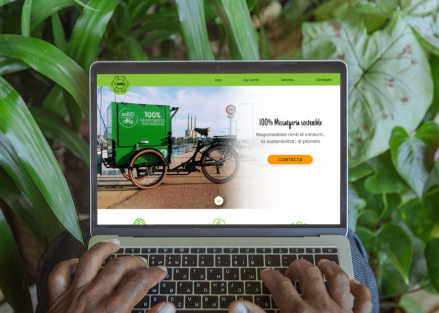
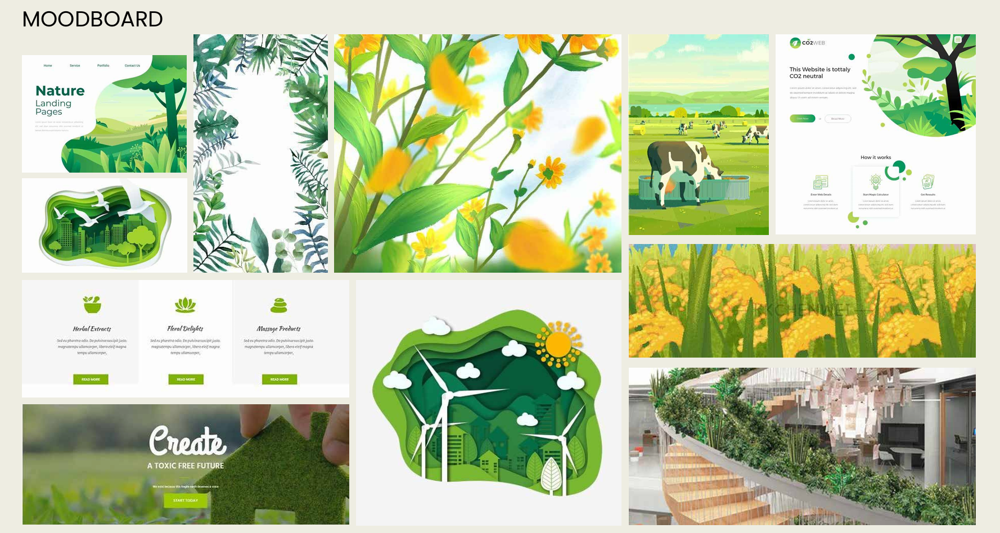
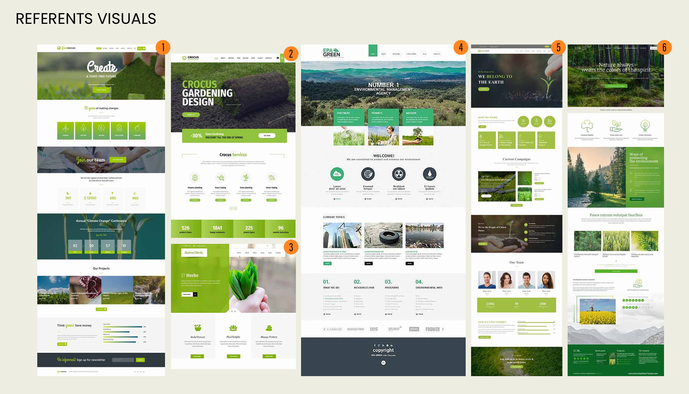
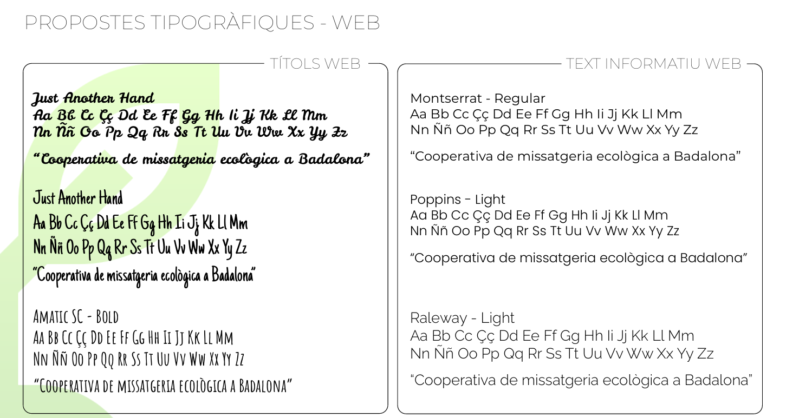
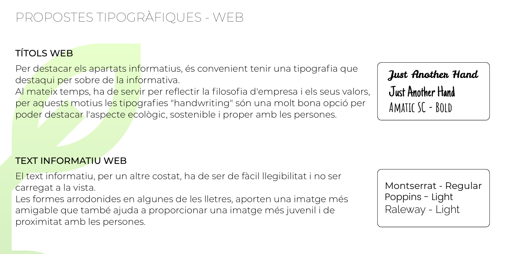
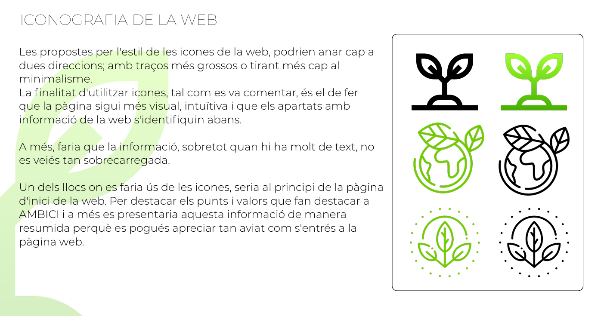
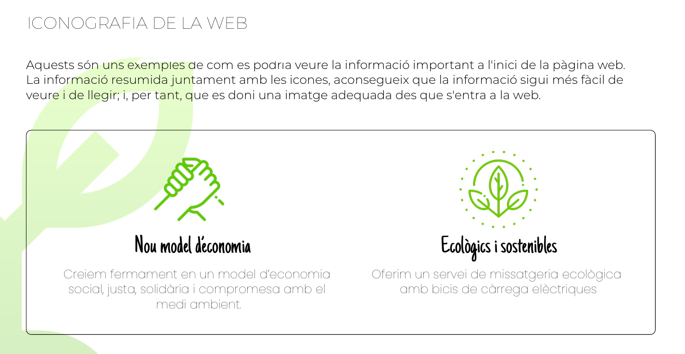
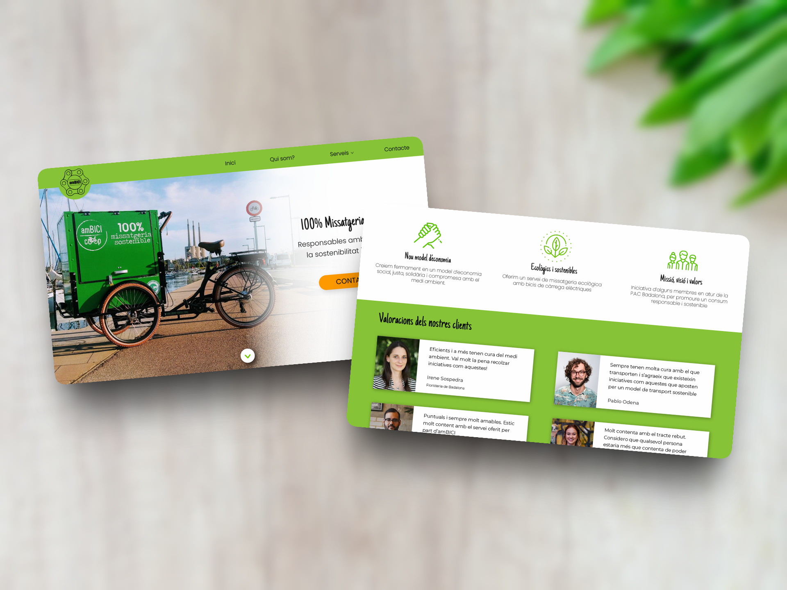

amBICI S.C.C.L: Website
Collaborative work on a project in which I was in charge of the design of the website of a cooperative located in Badalona (Catalonia).

Overview
This project started as an initiative in the school in which I studied Interactive Design. The professors organized groups of students from different courses and put us in contact with startups, cooperatives and small business near us in order to create a project for the real world.
While other of my colleagues were in charge of the logo redesign, creating presentation cards, a presentation video, and other elements, I was in charge of the redesign of the website.
Problem & Goals
The cooperative was very small and relatively new, so didn't have a big amount of reliable clients and needed to create new ways to connect with people and to show their values and identity since the first contact.
The original page was confusing, without rhythm, and contacting the cooperative through it was chaotic.
It was important to redo the website from the beginning, and create a new one able to connect with people, to show who they where and what was their job, easy and fast to read, and able to make easy the process to contact them.
Process
Briefing & Analysis
The first step for this project was to discover all the necessary information about the cooperative: for how long it was active, the people who was working on it, the kind of services they offered, their limitations, future plans for their project, and so on.
After all the information was gathered, it was easier to understand their needs.
Needs Identified & Proposal
The cooperative's needs were the following ones: new ways to become known more easily, have a product that helped them connect with people and show who they were, their principles and what services were they offering. They needed to present themselves as closer and more human.
Target Audience
In this case, the age was not a very relevant factor to create a target audience. In this project, the target audience was: local residents of the city (Badalona), businesses in need of a delivery service and people interested in sustainability.
Design Principles
The principles for this project were:
Create trust: Clear messages and clean layout.
Identity based on sustainability: Showcase their values through color, typography, and other visual elements.
Community focus: To introduce the people behind the cooperative.
Clarity and transparency: Information about services and contact has to be easy to find.
Moodboard & Referents
The moodboard and referents were focused on sustainability, local identity, and friendly communication, in order to find an approachable aesthetic, and also capable of reflecting their values.


Typography
Typography was selected to ensure clarity and readability while maintaining a friendly and approachable tone. A clean typeface was used for body text to make information easy to scan, while headings help create a clear visual hierarchy.


Iconography
I did some research and a few small tests visualizing icons alongside typography to see what the most suitable graphic style would be.


Final Outcome
Final proposal document: View design PDF

The final result is a redesigned website that clearly communicates the cooperative’s identity, values, and services. The new structure improves navigation and allows users to quickly understand what the cooperative offers and how to get in touch.
The design focuses on clarity, accessibility, and a more human tone, helping the cooperative present itself as a trustworthy and community-oriented organization.
Reflection
This project gave me the opportunity to work with a real client and understand how design decisions can directly impact how a small organization presents itself.
One of the main challenges was balancing clarity with personality, ensuring the website was easy to use while still reflecting the cooperative’s identity and values.
If I were to continue this project, I would conduct usability testing with real users to validate the navigation and further improve how the services are communicated.